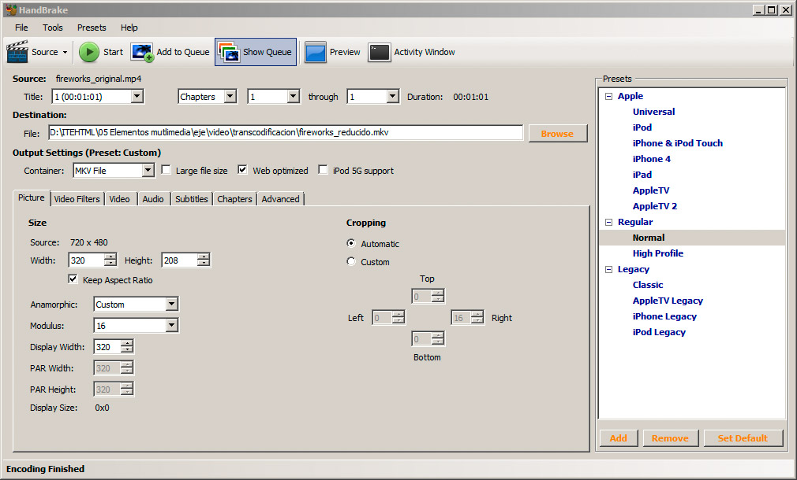
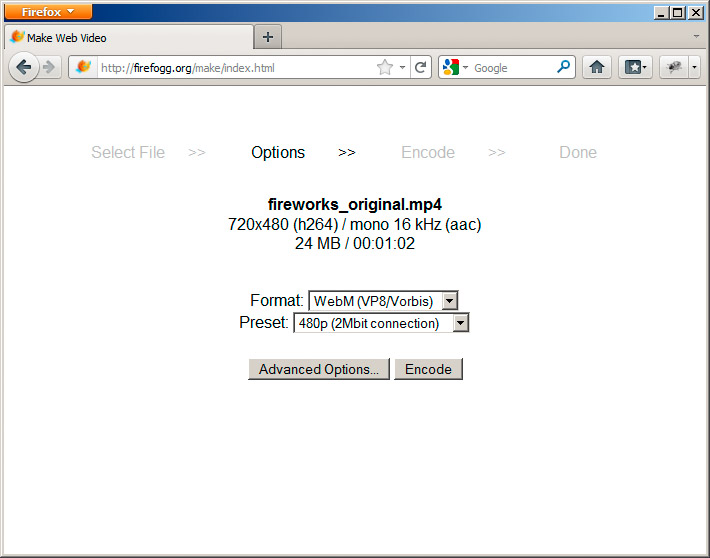
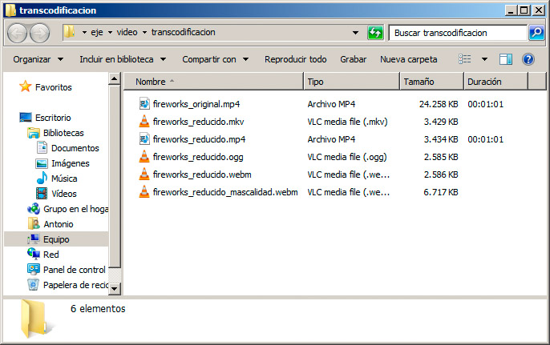

El contenedor de vídeo es el tipo de archivo que va contener el vídeo, las pistas de audio y otra información necesaria poder mostrar el vídeo correctamente. Hay muchos contenedores diferentes, como MPEG-4 (archivos .mp4), Flash (.flv o .f4v), Ogg Vorbis (archivos .ogg), WebM (archivos .webm) o AVI (extensión .avi).
Cada uno de esos contenedores tiene sus ventajas y sus inconvenientes, es más abierto o presenta las limitaciones propias del software propietario.
Dentro de cada contenedor de vídeo se insertará el vídeo en cuestión. Dado el tamaño que suele ocupar una pequeña porción de vídeo, todos los contenedores almacenan el contenido con algún tipo de compresión. Es decir, el vídeo está codificado con algún método. Esta compresión se realiza mediante un codec. Lo mismo sucede con el flujo de audio; también estará comprimida con algún codec de audio. Así, en cada contenedor podemos encontrar uno o varios flujos de video y audio, cada uno codificado con un método diferente. Si nuestro ordenador no dispone de los codec adecuados, nos encontraremos con que no somos capaces de visualizar o escuchar el material en cuestión.
En resumen, el vídeo y el audio están codificados con un formato concreto y, a su vez, todo ello está insertado en un formato de archivo contenedor. Dentro de un formato contenedor no siempre nos encontraremos la misma codificación.
Todo esto genera una combinatoria enorme de formatos a los que hay que incorporar la variable del navegador. Cada navegador en la actualidad es capaz de reproducir un número concreto de formatos. A día de hoy, casi todas las nuevas versiones de los navegadores son capaces de reproducir vídeo en formato WebM. El formato Ogg Vorbis, por ejemplo, una muy buena alternativa por ser libre, en la actualidad no funcionaría en Internet Explorer ni en Safari.
Codificación de vídeo
El material que vamos a presentar se encontrará en un formato y una codificación concreta. Por suerte, podemos hacer una transcodificación del vídeo, esto es, convertirlo al formato que mejor se ajuste a nuestras necesidades. Lo más probable es que el programa, que hayamos empleado para generar el vídeo, sea capaz de realizar esa conversión. Si no es así, podremos encontrar con facilidad aplicaciones capaces de realizar este proceso.
De entre todas las posibilidades que encontramos, podemos emplear una aplicación como Handbrake para hacer la conversión de un vídeo y ajustar algunos de sus parámetros, especialmente los de dimensiones, si el vídeo original es muy grande; esta aplicación se muestra en la figura:

Descarga Handbrake
Handbrake se puede descargar en la siguiente dirección http://handbrake.fr/downloads.php
Fireogg es un complemento de Firefox que podemos emplear para generar archivos Ogg Vorbis o WebM a partir de otros formatos.
La figura muestra esta alternativa en funcionamiento:

Su uso se realiza desde la página anterior. Seleccionando Make web video comenzaremos un proceso guiado que nos llevará a la conversión del video. Esta es una muy buena opción para trabajar con proyección de futuro, ya que emplea los dos formatos que mejor perspectiva tienen en este momento.
La conversión de vídeos es en ocasiones un proceso lento, que puede llegar a durar horas si el vídeo original es muy largo.
El tamaño de los vídeos
Tras probar diferentes formatos, empleando estas dos opciones, hemos generado varias conversiones en la carpeta de la figura. Como se puede observar, los tamaños son muy diferentes al original, especialmente porque hemos reducido sus dimensiones. Debemos tener muy presente que Internet es un medio en el que el tamaño de los archivos es fundamental. Hay que conseguir que los vídeos no ocupen demasiado, para que se transfieran correctamente.

Pregunta Verdadero-Falso
Verdadero Falso
Verdadero Falso